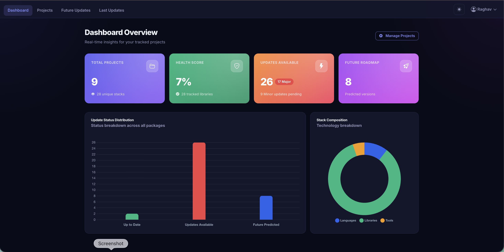
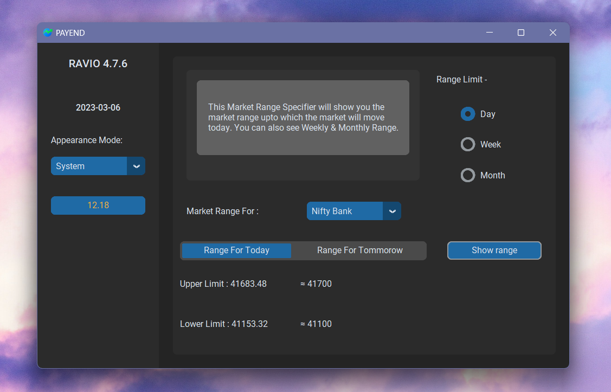
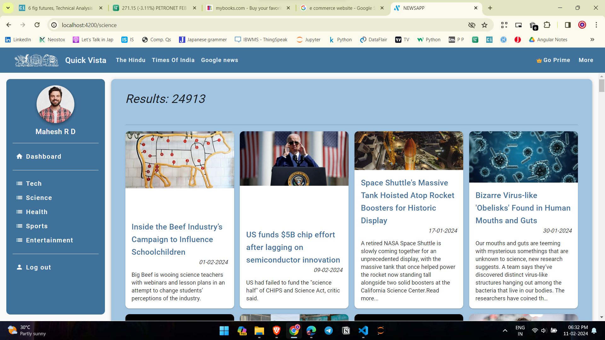
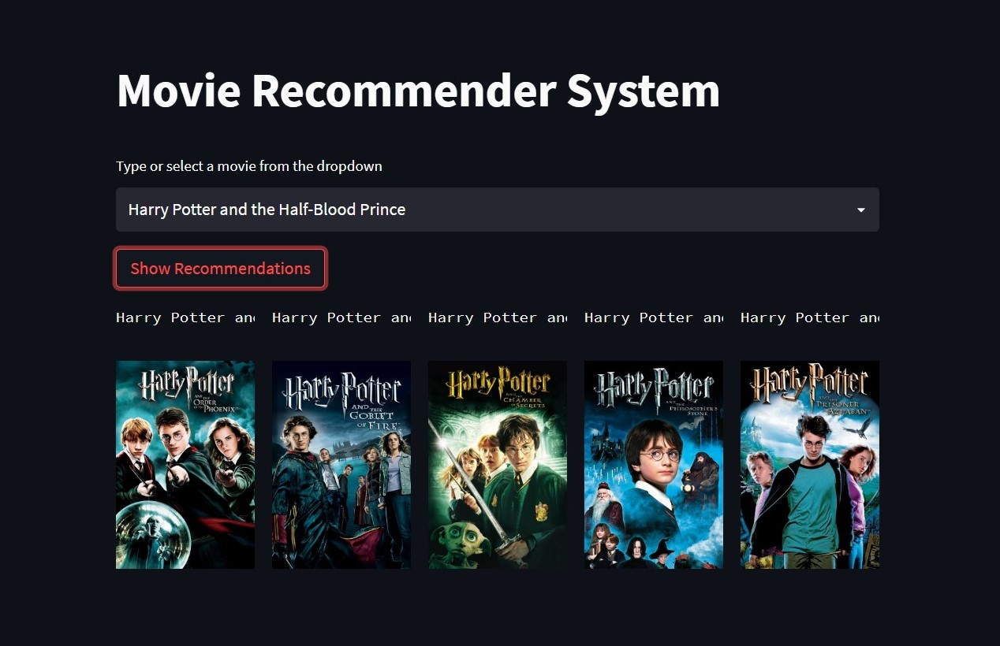
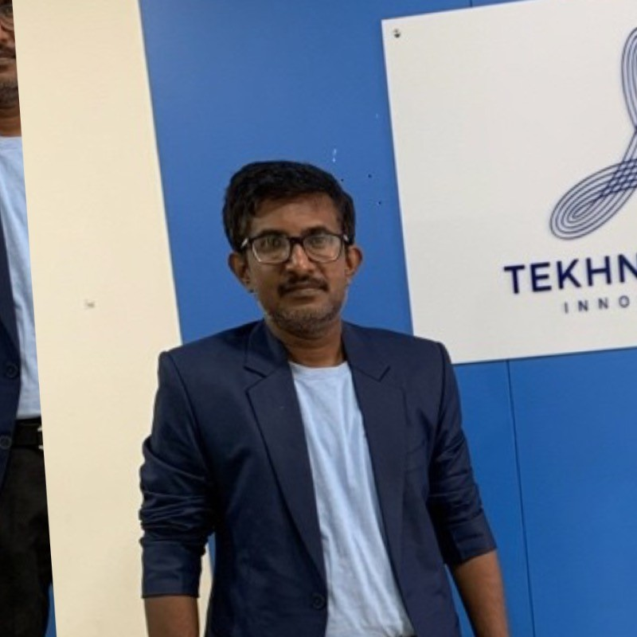

🗂️ PUNE, INDIA → SOFTWARE ENGINEER
Hi,
I am Raghav.
Am specializing in Python, Django/FastAPI, Angular, SQL, and Azure Cloud. Building scalable, real-time web applications with clean architecture, reliable backend systems, and modern UI experiences.
profile.json
- 00NameRaghav Desai
- 01RoleAssociate Software Engineer
- 02CompanyMastek
- 03StackPython · Angular · Azure · AI & ML
- 05Based inPune, India
- 06Uptime—
- 07StatusOpen to interesting problems
2+Years of
Experience
7+Projects Built
6+Open Source Contributions
8.5K+YouTube
Subscribers
3Companies
👋 WHO I AM
Full-stack engineer,
backend at heart.
I'm a Full-Stack Software Engineer specializing in Python, Django, Angular, SQL, and Azure Cloud. I build scalable, real-time web applications with clean architecture, reliable backend systems, and modern UI experiences.
I enjoy solving complex problems through thoughtful engineering: integrating secure REST APIs, optimizing databases, and applying cloud-native design to drive performance at scale. My experience spans enterprise solutions like stock-market monitoring applications, eCommerce platforms, and real-time news systems.
Currently working as an Associate Software Engineer at Mastek, after being promoted from Software Engineer Trainee. I'm continuously enhancing my expertise in AI & ML, cloud deployments, system reliability, and production-grade application development.
What I like most is taking something complex and making it clearer: a workflow, an API, a dashboard, a data process, or a large codebase that needs careful refactoring. I care about clean architecture, practical user experience, testing, and steady improvement through feedback.
What I enjoy buildingFull-stack apps, APIs, dashboards,
automation tools, and AI-powered workflows.
How I thinkUnderstand the problem first, then break it into
small, reliable pieces.
What I valueReadable code, maintainable systems, clear
communication, and measurable impact.
AI & ML mindsetPractical, not hype-driven — LLM
integrations, data workflows, AI-assisted tools.
🧩 TECHNICAL SKILLS
What I build with.
A practical toolkit for backend-heavy, full-stack, cloud-ready applications.
Frontend
HTML • CSS • JS/TS • Angular • React
Backend
Python • FastAPI • Django • Flask • DRF • Keycloak
Data
SQL • NumPy • Pandas • Plotly • Visualization • Matplotlib • Seaborn
Tools
Git • GitHub • CI/CD Pipeline • SonarQube • Docker
AI/ML
Machine Learning • Deep Learning • NLP • Computer Vision • API utilities
Testing
Pytest • Jest • SonarQube • API Testing
Cloud
Azure • Function Apps • Service Bus • Key Vault
Design
Figma • Systems • Tokens • JWT • OAuth
📦 SELECTED WORK
Projects.
A mix of web apps, ML experiments, and small tools built end to end.

PAYEND App - Stock Index Border Predictor
Predicts maximum limits for major Indian stock indices (e.g., Nifty, Bank Nifty) with ~98% accuracy to aid traders.
PythonTkinter

Mybooks - eCommerce Website
Online bookstore with browsing, search, and checkout built for speed and reliability.
PythonDjangoSQLite

Real Time NEWS App
Angular app fetching live news via News API with category filters for Sports, Entertainment, Science, Health, and Tech.
AngularMySQLTypeScript

Movie Recommendation System
Computes similarity scores to recommend top 5 relevant movies based on user input.
PythonML

Population Density Using Python
Interactive map visualizing India's population density by state to uncover patterns quickly.
PythonML

Chrome Extension
Generate QR codes for current webpages to share or open on mobile instantly.
JavaScript
🌱 GIVING BACK
Open Source Contributions.
Project-wide refactor
whichllm - Architecture Refactor
Contributed to a project-wide cleanup of whichllm, an open-source Python CLI that recommends local LLMs based on hardware, benchmarks, memory estimates, and runtime fit. Worked across Issue #41 to refactor the codebase's oversized core modules into focused, maintainable components while preserving CLI behavior, ranking logic, public imports, and test compatibility.
Refactored constants, output rendering, HuggingFace model fetching, benchmark
processing, ranking, and CLI command flow across a multi-PR series.
Preserved backward compatibility through shim modules so existing imports and
tests continued to work.
Verified the refactor with full and focused test suites, CLI tests, regression
tests, Ruff linting, formatting checks, and compile checks.
PythonTyper CLIArchitectureRefactoringTestingLLM Tools
Accessibility fix
HeadRoom - Dashboard Contrast Fix
Fixed a light-mode visibility issue in the HeadRoom dashboard where the active savings-profile badge became difficult to read. Added a scoped color override and regression coverage to keep the badge readable without changing dark-mode styling.
Improved the badge contrast to approximately 6.64:1, above the WCAG AA 4.5:1
requirement.
Added targeted pytest coverage and verified Ruff linting and formatting.
PythonCSSAccessibilityPytest
⚙️ HOW I WORK
Four habits that shape my delivery.
Understand Before Building
I first clarify the problem, users, constraints, and success criteria so the implementation solves the right thing.
Design Clean Boundaries
I prefer small modules, clear APIs, focused responsibilities, and code that can be changed without breaking unrelated behavior.
Verify What Matters
I add targeted tests around important workflows and use linting, formatting, and reviews to keep quality consistent.
Improve With Feedback
I like collaborative work where feedback from users, teammates, and maintainers makes the final solution stronger.
🧭 THE JOURNEY
My career, in order.
From a one-month data analyst stint to backend engineering at Mastek — every phase, in sequence.
00
Data Analyst
Indika AI · 1 Month
01
Angular Developer Intern
GeniaTEQ · 4 Months
02
Junior Python Developer
Tekhnologia Innovations · 6 Months
03
Associate Software Developer
Tekhnologia Innovations · 4 Months
04
Software Engineer Trainee
Mastek · 12 Months
05
Associate Software Engineer
Mastek · Current
Associate Software Engineer
CurrentMastek
Jul 2026 – Present
Pune, Maharashtra (Hybrid)
- Develop and maintain enterprise Python services, REST APIs, and serverless workflows using FastAPI, Flask, Azure Functions, Service Bus, Key Vault, App Service, and Container Apps.
- Build secure API workflows with OAuth2/SSO credentials, Pydantic validation, pagination, retry handling, structured logging, and consistent error-response patterns.
- Troubleshoot SIT and production incidents using Application Insights and application logs, tracing root causes across code, configuration, and external dependencies, and support corrective deployments via Azure DevOps CI/CD.
- Implement authentication and authorization using Keycloak user attributes and role-based access control (RBAC), working closely with frontend, QA, and architecture teams.
- Validate backend features with Pytest across business logic, validation, authentication, and failure scenarios, and containerized a Python proof-of-concept with Docker for portable, reproducible deployment.
Python
FastAPI
Flask
Azure
Azure DevOps
Docker
Keycloak
Pytest
Earlier role at Mastek
Software Engineer Trainee
Jun 2025 – Jun 2026
- Built a strong foundation in production-grade Python development, API debugging, and cloud-based application delivery on Azure.
- Paired with senior engineers to learn the codebase, internal tooling, and Azure Function Apps used across the team's services.
- Wrote unit tests and fixed defects in existing modules to build confidence in code changes before deployment.
- Practiced Git workflows, code reviews, and Agile ceremonies as part of the development team.
- Completed internal training and knowledge-sharing sessions to ramp up on Python best practices and Azure fundamentals.
Associate Software Developer
Tekhnologia Innovations India
Feb 2025 – May 2025
Pune, Maharashtra (On-site)
- Built Django applications and REST APIs for election management and inventory systems.
- Contributed to a hospital information management platform using Django and REST APIs.
- Developed a real-time face-recognition module and integrated it into an existing Django workflow.
- Implemented JWT authentication, role-based authorization, and SQL query optimization for secure, maintainable backend access.
- Built responsive interfaces using Django templates, JavaScript, HTML, and CSS; contributed via testing, code reviews, and Agile delivery.
Python
Django
JWT
SQL
JavaScript
Earlier role at Tekhnologia
Junior Python Developer
Aug 2024 – Jan 2025
- Implemented backend automation features using Python.
- Built responsive UI components with HTML, CSS, jQuery, and JavaScript.
- Managed SQL databases; testing & debugging for stability.
- Collaborated with senior developers to translate requirements into working features and fix reported bugs.
- Took part in Agile stand-ups and sprint planning to stay aligned with team priorities.
Angular Developer Intern
GeniaTEQ
Apr 2024 – Jul 2024
Pune, Maharashtra (On-site)
- Developed and optimized Angular components for dynamic, responsive apps.
- Integrated REST APIs ensuring smooth data flow and reduced load times.
- Implemented reusable UI components and better state management.
- Debugged and tuned performance to enhance UX; delivered features in Agile sprints.
Angular
Node.js
REST APIs
TypeScript
JavaScript
Data Analyst
Indika AI
Sep 2021 - Oct 2021
Pune, Maharashtra (Remote)
- Performed data analysis and visualization using Excel and analytics tools to derive insights.
- Cleaned and organized raw datasets to ensure accuracy before analysis.
- Built pivot tables and charts to summarize key trends for the team.
- Presented findings in a clear, actionable format to support decision-making.
Excel
Advanced Excel
Data Analysis
Data Visualization
🛠️ WHAT I CAN HELP WITH
From backend systems to AI-assisted product workflows.
I can help teams build reliable web applications, backend APIs, dashboards, AI/ML integrations, cloud-ready services, and maintainable codebases that are easier to extend over time.
Full-stack web apps
Django / FastAPI REST
APIs
Angular dashboards
AI/ML integrations
Cloud deployments
Database optimization
Automation tools
Code refactoring
Beyond Work
Curious by default.
In my free time, I like exploring new developer tools, learning about AI systems, improving side projects, watching tech content, and experimenting with ideas that can become useful products. That curiosity is what keeps me learning and improving as an engineer.
AI & ML Mindset
Practical
I approach AI/ML from an engineering perspective: using Python for data workflows, integrating LLM APIs, building AI-assisted tools, and designing systems where AI improves speed, clarity, or decision-making.
💬 KIND WORDS
Testimonials.

Product Manager
"Fantastic collaborator — communicates clearly and ships quality on time."
📬 GET IN TOUCH
Got a project in mind?
Let's build it.
Open to full-time roles, freelance work, and interesting collaborations.